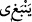

Hilede kılı kırk yararsa da
Hiçbir meslek ustasız ele geçmez
Sonra Mevlânâ Mesnevî’de Kâbil’in kıssasını aktarır. Kâbil kabir kazma sanatını
kargadan öğrenmiş, böylece kardeşi Hâbil’i öldürdükten ve günlerce omuzunda
taşıdıktan sonra defnetmiştir (bk. el-Maide 5/31).
“Zaten ona yaraşmazdı da”
Râğıb der ki: “Buradaki “ kelimesi, “ (Ateşin elbiseyi
yakması gerekir.)” Yâni yakmaya âmâdedir demektir. Buna göre mânâ şöyledir:
Muhammed (s.a.)’in şiir söylemesi doğru değildir. Bunu istese bile bu onun
yapabileceği, kolayca becerebileceği ve yerine getirebileceği bir şey değildir. Yani Hz.
Peygamber (s.a.) şiir söylemek istese de bu mümkün olmaz. Ancak takdim ve te’hir ile
vezni bozuk, kırık dökük bir şeyler dışında dili buna dönmez. Nitekim biz onu okuma
yazma bilmeyen, başkasının yazdığını okuyamayan bir ümmî kıldık. Böyle yaptık ki
O’nun hucceti/delili daha sağlam olsun ve O’nun risâletinin hak olduğu konusunda
şüphe edenlerin şüphesi büsbütün ortadan kalksın. Çünkü O (s.a.) şâir olsaydı ‘O
getirdiklerini kendiliğinden söylüyor. O bir şâirdir. O’nun sanatı söz dizmektir.’ diye
insanların çoğunun içine şüphe düşerdi.
İnsânü’l-uyûn’da der ki: “Hâsılı îtimâda lâyık olan ve üzerinde görüşlerin toplandığı
hak şudur: Hz. Peygamber (s.a.)’e haram kılınan şiir inşâ etmektir. Yani kasden vezinli
ve kafiyeli söz söylemektir. “Biz ona (Peygamber’e) şiir öğretmedik.” kavli ile
kasdedilen de odur. Hz. Peygamber (s.a.)’in vezinli söz söylediği farzedilse bile, vezni
kasdedilmediği için bu ıstılâh olarak şiir sayılmaz. Bu yasaklanmış da değildir. Genel
olarak Hz. Peygamber (s.a.) misal olarak ya da sözü sâhibine isnâd ederek bir beyit
okusa onu vezinli olarak söylemezdi, belki de vezinli olarak söylediği de olmuştur. Bazı
edibler ‘Hz. Peygamber (s.a.)’in güzel şiir söyleyebilirdi. Yani kasdederek vezinli şiir
söyleyebilirdi. Fakat söylemezdi. Yâni vezinli olarak şiir söylemeyi kasdetmezdi.’ diye
iddiâ etmiştir. Bu iddiâ ‘Hz. Peygamber (s.a.) güzel şiir söyleyemezdi’ dememizden
daha tam ve kâmildir. Ancak bu iddiâda Kur’an’ı (tefsir edilen bu âyeti) bir tür tekzîb
etmek söz konusudur.
İmam Bağavî et-Tehzîb’inde şöyle demiştir: “Mezhebimiz Şâfiîliğin imamlarından
Hz. Peygamber (s.a.)’in güzel şiir söyleyebildiği, ancak söylemediği nakledilmiştir. En
doğrusu şu ki Hz. Peygamber (s.a.) güzel şiir söyleyemezdi. Fakat şiirin iyisini kötüsünü
birbirinden ayırırdı. Belkide bu sözden kasıt O’nun vezinli söz ile vezinsiz sözü
birbirinden ayırdığıdır. Sonra Yenbûu’l-hayât’ta şöyle yazdığını gördüm: Canını ve
malını korumak için müslüman görünen bazı zındıklar “O güzel şiir söylerdi” sözüyle
Hz. Peygamber (s.a.)’e ta’rizde bulunur ve bu sözle Allah Teâlâ’nın: “Biz ona
(Peygamber’e) şiir öğretmedik. Zaten ona yaraşmazdı da.” kavlini yalanlamayı
kasdederlerdi.” Bütün bu bilgiler İnsânü’l-uyûn’dan alınmıştır.
Kadîr olan Allah müstağnî kılsın, Fakir (Bursevî) der ki: Bu konuda işte bunlar